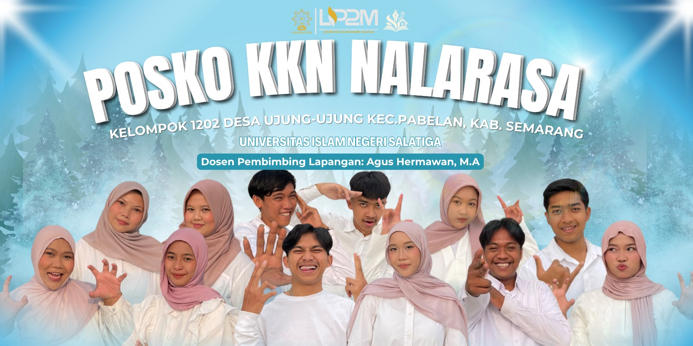

16 September 2026
Penerjunan PPM 2026, Kelompok Nalarasa Siap Berkontribusi di Desa Ujung-Ujung
PPM tahun 2026 mengusung tema “Moderasi Beragama, Optimalisasi Potensi Lokal, Ketahanan Keluarga, dan Hidup Bersih Sehat.”
Baca selengkapnyaKuliah Kerja Nyata · Desa Ujung-ujung
Nalarasa adalah kelompok KKN yang hadir di tengah masyarakat Desa Ujung-ujung untuk belajar, berbagi, dan membangun bersama — mulai dari pendidikan anak, kesehatan warga, hingga penguatan ekonomi desa.
Mahasiswa Terlibat
Program Kerja
Hari Pengabdian

Nalarasa merupakan kelompok Kuliah Kerja Nyata yang ditempatkan di Desa Ujung-ujung, sebuah desa agraris dengan potensi pertanian, kerajinan tangan, dan generasi muda yang antusias belajar. Nama Nalarasa lahir dari gabungan "nalar" dan "rasa" — semangat kami untuk berpikir jernih sekaligus peka terhadap kebutuhan masyarakat.
Selama masa pengabdian, kami tinggal, belajar, dan bekerja bersama warga untuk merancang program yang benar-benar menjawab kebutuhan desa, bukan sekadar menjalankan agenda kampus.
Empat Bidang Fokus
Program disusun bersama perangkat desa dan karang taruna agar tepat sasaran dan berkelanjutan setelah masa KKN berakhir.
Bidang 1
Bimbingan belajar, taman baca, dan pelatihan literasi digital untuk anak-anak Sukamulya.
Bidang 2
Posyandu, penyuluhan gizi, dan edukasi pola hidup bersih dan sehat bagi warga.
Bidang 3
Pendampingan UMKM, pelatihan pemasaran digital, dan pengembangan produk kerajinan desa.
Bidang 4
Pengelolaan sampah rumah tangga, penanaman pohon, dan kampanye desa bersih.
Kabar Terbaru
Dokumentasi kegiatan kami selama mengabdi di Desa Sukamulya.
16 September 2026
PPM tahun 2026 mengusung tema “Moderasi Beragama, Optimalisasi Potensi Lokal, Ketahanan Keluarga, dan Hidup Bersih Sehat.”
Baca selengkapnya
27 September 2026
Pemdes Ujung-Ujung menggelar Musrenbangdes untuk menyusun RKPDes 2027 dan DU RKP 2028, diikuti 52 peserta dari berbagai unsur.
Baca selengkapnya Ekonomi Kreatif
Ekonomi Kreatif
2 Agustus 2026
Ujung-Ujung, 15 Oktober 2026-Mahasiswa KKN Nalarasa UIN Salatiga menyelenggarakan kegiatan Sosialisasi Pemeliharaan Arsip Keluarga pada Kamis (15/10/2026), mulai pukul 09.40 WIB.
Baca selengkapnyaSampaikan Pesan
Ada pertanyaan, undangan kegiatan, atau ingin berkolaborasi dengan KKN Nalarasa? Tinggalkan pesan, kami akan segera membalas.
Desa Ujung-ujung, Kec. Pabelan, Kab. Semarang Jawa Tengah
kknnalarasa@gmail.com
+62 812-3456-7890